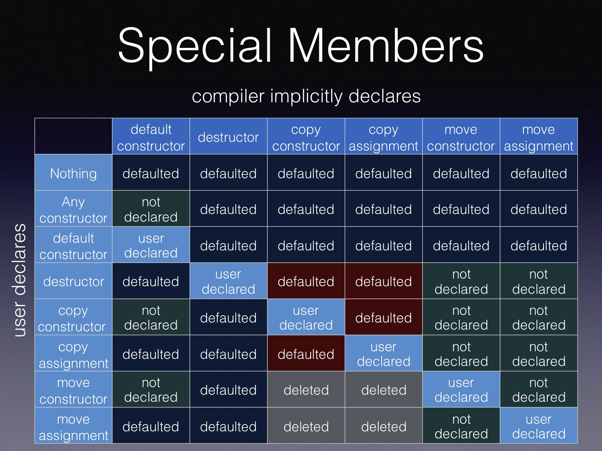

class And WhyWhen I first learned C++ decades ago, I was taught that data members should be private and appear at the bottom of the class declaration. The rationale for this was that the data members were just implementation details, and less important than the class' API.
And I followed this rule for decades ...
But I've since come to the conclusion that this is exactly wrong.
When I'm reading a class declaration, the very first things I want to know are:
Note that this is an ordered list: top priority is listed first.
Why is it so important that I first learn about resources?
data members:
Once I know that a class owns a dynamically sized array of integers, or several strings, or a pointer to an incomplete class, or whatever, I immediately start to get a feel for what this class does. Getting an overview of the data members and their names gives me that first impression:
class year_month_day
{
year y_;
month m_;
day d_;
public:
// ...
destructor:
With the data members in view, the next most important item for knowing what resources are owned is the destructor. Is that pointer data member owning or not owning? The destructor will say. So after the data members, the destructor, if it is to be user-declared is next:
class tzdb_list
{
std::atomic<tzdb*> head_{nullptr};
public:
~tzdb_list();
// ...
Even if the definition of the destructor is not visible (and it shouldn't be at this point),
just the existence of the user-declared destructor, combined with the list of data members,
usually gives a pretty good general idea of what a class owns or doesn't own.
~tzdb_list() apparently needs to do something with the head_
data member which is an atomic pointer. The most likely scenario is that it is going
to delete one or more tzdb.
And if the destructor is implicitly compiler declared and provided, then it is not explicitly listed first. If the reader expects to see the destructor as the first thing after the data members, then when it is missing, the reader can clearly see it is missing, as opposed to searching the entire class declaration for a destructor.
class year_month_day
{
year y_;
month m_;
day d_;
public:
year_month_day() = default;
// ...
year_month_day clearly has a compiler-declared destructor, otherwise it
would appear prior to the default constructor. And this means that simply running the
destructor for each data member (still clearly visible) is sufficient to destruct the
year_month_day. Indeed, having the data members close by is key to
understanding what the compiler-provided special members do!
With the data members and the destructor known, and knowing nothing else about a class, I know what resources a class owns. And no other information is as important and concise as this for a quick overview of a class's purpose.
default constructor:
Next, and only if it needs to be user-declared, I list the default constructor.
class day
{
unsigned char d_;
public:
day() = default;
// ...
Even if it is compiler-provided, it is often necessary to user-declare it if you want one, since if you declare any other constructor, the default constructor is inhibited if not user-declared. And by declaring right after the destructor (if needed), the reader knows where to look for it, and does not have to search the entire class declaration to find out if the default constructor is user-declared or not.
And if the default constructor is compiler-provided (either implicitly or explicitly), with the data members nearby, it is easy for the reader to see what the compiler-provided default constructor does.
In the above example for class day it is easy to see that ~day()
is compiler-provided, and is trivial because of the single unsigned char
data member. And that it has a trivial default constructor that works just the same way
as default constructing an unsigned char. We've only looked at a few lines of
code of class day and we already know a lot about it.
copy special members: copy constructor, copy assignment operator
If the class needs user-declared copy members, they are declared next, copy constructor first, copy assignment operator second.
template <class T>
class shared_ptr
{
T* ptr_ = nullptr;
shared_weak_count* cntl_ = nullptr;
public:
~shared_ptr();
shared_ptr() = default;
shared_ptr(shared_ptr const& sp) noexcept;
shared_ptr& operator=(shared_ptr const& sp) noexcept;
// ...
As we get into more complicated class types, readability becomes more and more important. In the above example, we can see that something non-trivial needs to happen in the destructor, likely leading to ownership of the two pointer data members.
We can also see that the default constructor consists of the state that both pointer
data members are set to nullptr. This constructor is implicitly both
constexpr and noexcept.
And we can see that this class is copyable, but (most likely) not trivially copyable.
However we can copy without risk of throwing exceptions! Except for the descriptive
name shared_ptr we do not yet know exactly how this class copies, but we
do know that it can be copied.
move special members: move constructor, move assignment operator
If the class needs user-declared move members, they are declared next, move constructor first, move assignment operator second.
template <class T, class D = default_delete<T>>
class unique_ptr
{
public:
using deleter_type = D;
using pointer = compute_pointer_t<T, deleter_type>;
private:
pointer ptr_ = nullptr;
deleter_type d_;
public:
~unique_ptr();
unique_ptr() = default;
unique_ptr(unique_ptr&& ptr) noexcept;
unique_ptr& operator=(unique_ptr&& ptr) noexcept;
// ...
In the above example we can quickly see that ptr_ is likely an owned resource
because of the user-declared destructor. And that the type is default constructible by
setting ptr_ to nullptr. We can also quickly see that
unique_ptr is not copyable because the copy members are noticeably
missing between the default constructor and the move members. User-declared move members
will implicitly delete the copy members. With very few lines of code we can quickly see
that unique_ptr is a move-only type that owns a resource.
Everything else:
In the first few lines of code we can see the data members, and all six of the special member functions, whether or not they are user-declared. And where any of the six special members are compiler-provided, the list of data members (and bases if any) tell us what the special members do.
Next I like to provide the rest of the constructors, followed by the rest of the member functions.
Rule of what?
So I don't follow a "rule of 5". After all, there are 6 special members:
Nor do I follow the newer "rule of 0". I follow my own priorities.
Nothing is more important than correctness. And each of the 6 special members must be correct, no matter whether it is user-provided, user-declared and compiler-provided, implicitly compiler-provided, or does not exist at all.
Additionally I have found that this ordering of the declarations, including omitting any that are not needed, provides the best readability in class declarations. It is consistent and concise as possible. It provides the most important characteristics of a class as soon as possible to the reader. It prevents the reader from having to search the entire class declaration for compiler-declared special members which are otherwise invisible to the reader.
Testing
No matter how you declare your class and its special members, unit tests are the place to be verbose.
This:
class year_month_day
{
year y_;
month m_;
day d_;
public:
year_month_day() = default;
// ...
Can be tested with:
static_assert(std::is_trivially_destructible<year_month_day>{});
static_assert(std::is_trivially_default_constructible<year_month_day>{});
static_assert(std::is_trivially_copy_constructible<year_month_day>{});
static_assert(std::is_trivially_copy_assignable<year_month_day>{});
static_assert(std::is_trivially_move_constructible<year_month_day>{});
static_assert(std::is_trivially_move_assignable<year_month_day>{});
This:
class tzdb_list
{
std::atomic<tzdb*> head_{nullptr};
public:
~tzdb_list();
tzdb_list() = default;
tzdb_list(tzdb_list&& x) noexcept;
// ...
Can be tested with:
static_assert( std::is_nothrow_destructible<tzdb_list>{});
static_assert( std::is_nothrow_default_constructible<tzdb_list>{});
static_assert(!std::is_copy_constructible<tzdb_list>{});
static_assert(!std::is_copy_assignable<tzdb_list>{});
static_assert( std::is_nothrow_move_constructible<tzdb_list>{});
static_assert(!std::is_move_assignable<tzdb_list>{});
This:
class day
{
unsigned char d_;
public:
day() = default;
// ...
Can be tested with:
static_assert(std::is_trivially_destructible<day>{});
static_assert(std::is_trivially_default_constructible<day>{});
static_assert(std::is_trivially_copy_constructible<day>{});
static_assert(std::is_trivially_copy_assignable<day>{});
static_assert(std::is_trivially_move_constructible<day>{});
static_assert(std::is_trivially_move_assignable<day>{});
This:
template <class T>
class shared_ptr
{
T* ptr_ = nullptr;
shared_weak_count* cntl_ = nullptr;
public:
~shared_ptr();
shared_ptr() = default;
shared_ptr(shared_ptr const& sp) noexcept;
shared_ptr& operator=(shared_ptr const& sp) noexcept;
// ...
Can be tested with:
static_assert(std::is_nothrow_destructible<shared_ptr<int>>{});
static_assert(std::is_nothrow_default_constructible<shared_ptr<int>>{});
static_assert(std::is_nothrow_copy_constructible<shared_ptr<int>>{});
static_assert(std::is_nothrow_copy_assignable<shared_ptr<int>>{});
static_assert(std::is_nothrow_move_constructible<shared_ptr<int>>{});
static_assert(std::is_nothrow_move_assignable<shared_ptr<int>>{});
And this:
template <class T, class D = default_delete<T>>
class unique_ptr
{
public:
using deleter_type = D;
using pointer = compute_pointer_t<T, deleter_type>;
private:
pointer ptr_ = nullptr;
deleter_type d_;
public:
~unique_ptr();
unique_ptr() = default;
unique_ptr(unique_ptr&& ptr) noexcept;
unique_ptr& operator=(unique_ptr&& ptr) noexcept;
// ...
Can be tested with:
static_assert( std::is_nothrow_destructible<unique_ptr<int>>{});
static_assert( std::is_nothrow_default_constructible<unique_ptr<int>>{});
static_assert(!std::is_nothrow_copy_constructible<unique_ptr<int>>{});
static_assert(!std::is_nothrow_copy_assignable<unique_ptr<int>>{});
static_assert( std::is_nothrow_move_constructible<unique_ptr<int>>{});
static_assert( std::is_nothrow_move_assignable<unique_ptr<int>>{});
In each case, readable and concise in the declaration, thorough and verbose in the unit test.
Education
And perhaps this now-well-known table can help with knowing which special member functions get implicitly defaulted, deleted or inhibited when the user declares other special member functions:
See this presentation for a detailed description of this table.